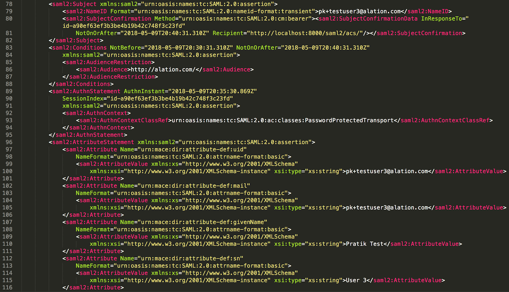

Configure Authentication with SAML from Alation Shell¶
Alation supports SAML authentication, and your data catalog can be one of the applications accessible with single sign-on (SSO). With SSO, users log in into their SSO provider in order to access multiple other authorized apps.
This page describes configuring authentication with SAML on the backend of the Alation server. This configuration requires SSH access to the Alation host.
Alternatively, from version 2022.1, users with the Server Admin role can configure SAML authentication in the Alation user interface. Refer to Configure Authentication with SAML from Admin Settings for details.
Note
From version 2021.3, Alation supports automatic group management using SCIM 2.0 APIs. If you are going to manage groups via the IdP, you will need to configure SCIM in addition to SAML in both your IdP and Alation. See Sync Groups Between Alation and IdP Using SCIM below.
Prerequisites¶
Your company uses corporate authentication using either a native SAML server or a third party SAML Identity Provider (IdP), such as Okta, OneLogin, or other.
You have SSH access to your Alation host and can use the Alation shell.
You will need to get the file idp_metadata.xml after configuring the IdP side. This file must be placed on the Alation server as part of the configuration on the Alation side.
Step 1: Generate SAML Keys in Alation¶
To generate the keys:
Use SSH to connect to the Alation host.
Enter the Alation shell:
sudo /etc/init.d/alation shell
Run the following command to generate the keys:
alation_action create_saml_keysVerify that SAML keys have been successfully generated: check the directory opt/alation/site/saml (path inside the Alation shell). There should be two key files in this directory:
private.pem
public.pem
Step 2: Add Alation to Your IdP¶
By default, Alation sends signed SAML authentication requests to the IdP. If your IdP requires service provider request signatures to be verified, copy and upload the public.pem file generated in the previous step from the Alation host to your IdP.
Note
This setting is controlled by the alation_conf parameter
alation.authentication.saml.authn_requests_signedwhich isTrueby default.Register an application for Alation in your IdP. Use the table SAML Parameters below for SAML parameter values expected by Alation.
Note
You can use section Example IdP Configuration: Okta (2018.42) as SSO Provider as an example.
SAML Parameters¶
To add Alation to your IdP, you will need to provide a number of required SAML parameters and configure SAML attributes for attribute assertion.
IdP Parameter |
Value required by Alation |
|---|---|
Assertion Consumer Service (ACS) URL |
(Replace |
Recipient URL |
(Replace |
Audience URI (Audience Restriction) |
Note that this is the default value. It matches the default value of the Entity ID property for Alation application. |
(Optional) Single Logout (SLO) URL Confirm that you want to enable SLO. All users will be logged out of your SSO system upon logout from Alation if SLO is enabled. |
SLO URL for HTTP-Redirect (GET based): SLO URL for HTTP-POST: (Replace BASE_URL with the URL of your Alation instance). Note that to complete enabling SLO, you will need to set the dedicated parameter in Alation, too. This step is described in step 4 below. |
Metadata |
(Replace BASE_URL with the URL of your Alation instance). Note that to access metadata at this URL, it is required to temporarily enable SAML authentication, after accessing the metadata file, disable it and proceed with configuration. To enable SAML,
|
(Optional) Response Signed |
If you choose to use the signed response,
set the corresponding alation_conf
parameter to
|
(Optional) Assertion Signed |
If you choose to use the signed assertion, you set the corresponding alation_conf
parameter to
|
Configure SAML Attributes¶
Note
If your IdP does not offer a way to map attributes, you can use a custom attribute map to configure them. See Use a Custom Attribute map for SAML Configuration for more details.
Alation supports two name formats for SAML attributes: URI and Basic. It is recommended to use the name format URI. To use URI, for all attributes your IdP will include in the assertion response, make sure to set the name format to:
urn:oasis:names:tc:SAML:2.0:attrname-format:uriImportant
If you do not have an option to configure the name format in your IdP settings, use the URI attribute name format as Alation defaults to using URI.
To configure the attributes:
Map the SAML attributes for the Assertion Response.
The attributes listed in the table below are required by Alation. These attributes should be sent as part of the
AttributeStatementpart of the SAML response. The table below lists the attributes in the URI format:NameFormat="urn:oasis:names:tc:SAML:2.0:attrname-format:uri":Attribute Name: URI
Description
urn:oid:0.9.2342.19200300.100.1.1The user ID for a user (can be Employee ID, Username, Email, etc. This is the attribute that identifies a user. If you cannot provide the user ID attribute, see Using name id as User ID below.
urn:oid:0.9.2342.19200300.100.1.3The user’s email address
urn:oid:2.5.4.42The user’s first/given name
urn:oid:2.5.4.4The user’s last name/surname
urn:oid:2.5.4.12The user’s title (optional)
urn:oid:0.9.2342.19200300.100.1.60The user’s profile photo (optional)
You can alternatively use the name format
Basicif your IdP does not supportURI:NameFormat="urn:oasis:names:tc:SAML:2.0:attrname-format:basic"The SAML attribute names using the format
Basicare listed in the table below.Attribute Name: Basic
Description
urn:mace:dir:attribute-def:uidThe user ID for a user (Employee ID, Username, Email, etc.). If you cannot provide the user ID attribute, see Using name id as User ID below.
urn:mace:dir:attribute-def:mailThe user’s email address
urn:mace:dir:attribute-def:givenNameThe user’s first/given name
urn:mace:dir:attribute-def:snThe user’s last name/surname
urn:mace:dir:attribute-def:titleThe user’s title (optional)
urn:mace:dir:attribute-def:jpegPhotoThe user’s profile photo (optional)
Example: When correctly configured, the attributes in your assertion response will look similar to the following:

{kind=link}
Using name id as User ID¶
Available from release 2021.2
By default, Alation requires that a user ID attribute should be present in the assertion response. However, sometimes an admin cannot provide this attribute from their IdP configuration due to security policy restrictions or other reasons.
If this is your case, you can set the alation_conf parameter alation.authentication.saml.use_name_id_as_username
to True on the Alation server. When it is set to True, the uid attribute or any other custom unique attribute for identifying users does not need to be included into the SAML assertion response. Instead, the name id attribute from the SAML response will be used as the unique attribute for looking up a user.
It is recommended to set this parameter during the initial setup of SAML authentication. Making this change later to switch from using the uid attribute to the name id attribute will result in Alation creating duplicate accounts for existing users.
Note
To troubleshoot duplication, the existing accounts need to be converted to the new accounts. Contact Alation Support to guide you through this process.
To set the parameter:
From the Alation shell, run:
alation_conf alation.authentication.saml.use_name_id_as_username -s True
In versions 2022.1 and newer, no restart is required. In versions before 2022.1, restart the Web service:
alation_supervisor restart web:*
On the IdP side, make sure that the Name ID Format attribute in the integration application you are using for Alation is set to either
persistentorEmailAddress. The value must not betransientastransientis incompatible with this configuration on the Alation server.Note
If the parameter
alation.authentication.saml.use_name_id_as_usernameis set toTrueon the Alation server, but at the same time, the Name ID Format attribute is set totransienton the IdP side, Alation may create duplicate accounts when users log in.Perform this step in release 2022.1 and newer. In older releases, skip this step.
After verifying the Name ID Format on the IdP side, make sure that on the Alation side, you have the same setting. Check the value of the alation_conf parameter
alation.authentication.saml.name_id_policy_format. The default value isurn:oasis:names:tc:SAML:2.0:nameid-format:persistent. This value is valid if on the IdP side you have selectedpersistent. If on the IdP side you have selectedemailAddress, then set this parameter toemailAddress. From the Alation shell, run:alation_conf alation.authentication.saml.name_id_policy_format -s urn:oasis:names:tc:SAML:1.1:nameid-format:emailAddress
No restart is required.
Step 3: Configure the Response and Assertion Signatures¶
This step applies if you have enabled the Response Signed or Assertion Signed signatures in your IdP application settings for Alation. Alation has two dedicated parameters in alation_conf that need to be set to True for the signed response or assertion or both to be required.
If you have only enabled the signed response, you need to set alation.authentication.saml.want_response_signed to True. In versions 2022.1 and newer, no restart is required. In versions before 2022.1, restart the Web service:
In the Alation shell, run
alation_conf alation.authentication.saml.want_response_signed -s TrueRestart Web:
alation_supervisor restart web:uwsgi
If you have only enabled the signed assertion, you need to set alation.authentication.saml.want_assertions_signed to True. In versions 2022.1 and newer, no restart is required. In versions before 2022.1, restart the Web service:
In the Alation shell, run
alation_conf alation.authentication.saml.want_assertions_signed -s TrueRestart Web:
alation_supervisor restart web:uwsgi
If you have enabled both, both parameters should be set to True. In versions 2022.1 and newer, no restart is required. In versions before 2022.1, restart the Web service:
In the Alation shell, run:
alation_conf alation.authentication.saml.want_assertions_signed -s True alation_conf alation.authentication.saml.want_response_signed -s TrueRestart Web:
alation_supervisor restart web:uwsgi
Configuring the Encryption Algorithm¶
Available from version 2022.1
In version 2022.1 and newer, perform this step if you have enabled any of the signatures (signed response, signed assertion, or both) in your IdP application settings. You can further specify the encryption algorithm of the SAML signature method (SignatureMethod) and SAML digest method (DigestMethod). The default is SHA1. The encryption algorithms you set in Alation using alation_conf should correspond to the encryption algorithms you have selected on the IdP side. Make sure you are setting the same signature (SignatureMethod) and digest (DigestMethod) algorithm as in the IdP.
SAML SignatureMethod¶
By default, Alation uses SHA1 as the signature algorithm. It is possible to change it to SHA256 using alation_conf:
From the Alation shell, run the following command:
alation_conf alation.authentication.saml.authn_requests_sign_algo -s sha256No restart is required.
SAML DigestMethod¶
By default, Alation uses SHA1 as the digest algorithm. It is possible to change it to SHA 256 using alation_conf.
From the Alation shell, run the following command:
alation_conf alation.authentication.saml.authn_requests_digest_algo -s sha256No restart is required.
Step 4. Place the IdP Metadata File on the Alation Server¶
You will need the metadata file idp_metadata.xml from your IdP in the SAML XML format.
Make sure the file has the following information:
Entity ID
X509 certificate for signature verification
SingleSignOnService Location (the Remote Login URL for the SAML server)
HTTP binding:
RedirectorPOST(optional; if not defined, will default toRedirect)
Protocol Binding¶
Alation supports both HTTP POST and HTTP Redirect binding for SAML SSO. The protocol binding defaults to Redirect and is controlled by the alation_conf parameter alation.authentication.saml.force_redirect_binding.
If you are using Redirect binding, leave the default value.
If you are using POST, set this parameter to False:
From the Alation shell, run:
alation_conf alation.authentication.saml.force_redirect_binding -s False
Restart uWSGI:
alation_supervisor restart web:uwsgi
Providing the idp_metadata.xml to Alation¶
To place the idp_metadata.xml file to the Alation server:
Copy the idp_metadata.xml file to a directory on the Alation host, for example /tmp.
SSH to the host.
Move the file from /tmp (or from the location you copied it to) to /opt/alation/alation/data1/site_data/saml/ (path outside the Alation shell). From inside the Alation shell, this file will now be accessible at /opt/alation/site/saml/idp_metadata.xml
If you do not have a shell session open, enter the Alation shell:
sudo /etc/init.d/alation shell
Make sure the idp_metadata.xml file is present at /opt/alation/site/saml/idp_metadata.xml.
Step 5. Configure Additional Parameters and Enable SAML Authentication¶
Perform these steps in the Alation shell.
If you are using an Entity ID value other than default, then provide the Entity ID using the alation_conf command:
alation_conf alation.authentication.saml.entity_id -s <globally_unique_entity_id>
Where
<globally_unique_entity_id>should be replaced with a valid, globally unique Entity ID.If you are using Audience Restriction in your IdP, the Entity ID should match the Audience Restriction value for the server you are configuring.
Note
The default Entity ID is
http://alation.com/.Entity ID can be any URI that can be considered unique in your network. In most cases, only one instance of Alation runs in the production environment, authenticating against the production IdP. Usually, the assumption is that there is no other application with the Entity ID set to
http://alation.com/in the IdP, and so this value is unique and can identify the Alation application.However, if you are not using the default value, provide the value that will uniquely identify the server you are configuring and make sure to set the same value in the parameter
alation.authentication.saml.entity_id.To allow users to log in to Alation from the application dashboard in the IdP, set the parameter
alation.authentication.saml.allow_unsolicitedtoTrue. This parameter ensures that:Users can log in to Alation directly from the IdP dashboard
Users can successfully log in from the Chrome browser
alation_conf alation.authentication.saml.allow_unsolicited -s True
(Optional) To enable SLO, set:
alation_conf alation.authentication.saml.logout_supported -s True
Enable SAML authentication:
alation_conf alation.authentication.saml.enabled -s True alation_conf alation.authentication.builtin.enabled -s False
Restart the Web service:
alation_supervisor restart web:*
Exit the Alation shell:
exit
Step 6. Verify Your SAML Configuration¶
Visit your Alation server in the browser of your choice and make sure that:
You are redirected to your IdP login page correctly
After you authenticate with your IdP (log in using the corporate username and password), you are then redirected to Alation, and logged in.
Sync Groups Between Alation and IdP Using SCIM¶
Available from version 2021.3
When the authentication method on the Alation instance is SAML, it is possible to also enable SCIM integration in order to synchronize Groups between Alation and the IdP. With Groups pushed from the IdP over SCIM APIs, Server Admins do not have to manually create Custom Groups and manually maintain consistency of group membership when new users are added or users are removed from groups in the company directory.
If you choose to use SCIM integration to sync groups, you will first need to configure SAML authentication and then configure SCIM sync for groups and users. See Enable SCIM Integration for User and Group Management for details.
Example IdP Configuration: Okta (2018.42) as SSO Provider¶
This section contains parameter values for adding Alation to the SSO application cluster via Okta. Use this information if your SSO Provider is Okta (this description is based on Okta version 2018.42).
To provide parameters for Alation in Okta,
Log in to Okta and navigate to Administrator’s dashboard, then click Add Applications.
On the Applications page, click Create New Application.
In the Create a New Application Integration dialog, select SAML 2.0 and click Create.
On the settings screen that opens, provide the values for the SSO parameters (see below). Note that Okta UI provides explanations for each required parameter in a tooltip opened from the “question” icon.
After you have provided the parameters, proceed to the Feedback tab of the settings screen, provide the required information, and click Finish.
Parameters for Alation in Okta¶
General Tab
App Name |
For example, Alation |
App logo (optional) |
Add the logo if desired |
App visibility |
Select or leave clear the checkboxes as required |
Configure SAML tab (Replace BASE_URL with the URL of your Alation instance)
Single Sign On URL |
BASE_URL/saml2/acs/ |
Use this for Recipient URL and Destination URL (checkbox) |
selected |
Audience URI (SP Entity ID) |
|
Default RelayState |
Leave blank |
Name ID Format |
EmailAddress |
Application username |
Okta username |
Advanced Settings |
|
Response |
Signed |
Assertion Signature |
Signed |
Signature Algorithm |
RSA-SHA256 |
Digest Algorithm |
SHA256 |
Assertion Encryption |
Unencrypted |
Enable Single Logout |
Verify with your organization if you want to use SLO for Alation. If SLO is required, then select checkbox Allow application to initiate Single Logout |
Single Logout URL (only applies if SLO is enabled) |
BASE_URL/saml2/ls/post/ |
SP Issuer |
|
Signature Certificate |
Leave blank |
Authentication context class |
PasswordProtectedTransport |
Honor Force Authentication |
Yes |
SAML Issuer ID |
|
Attribute Statements in URI
Note
See Configure SAML Attributes for reference.
Name |
Name Format |
Value |
|---|---|---|
|
URI Reference |
user.email |
|
URI Reference |
user.login |
|
URI Reference |
user.firstName |
|
URI Reference |
user.lastName |
|
URI Reference |
user.title |
Leave Group Attribute Statements (Optional) blank.